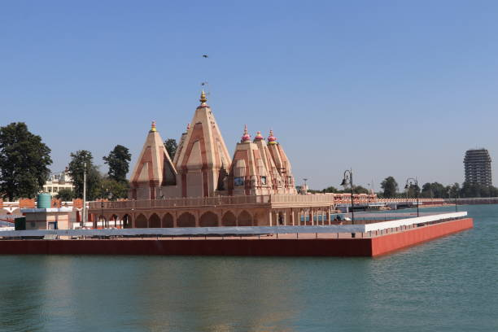
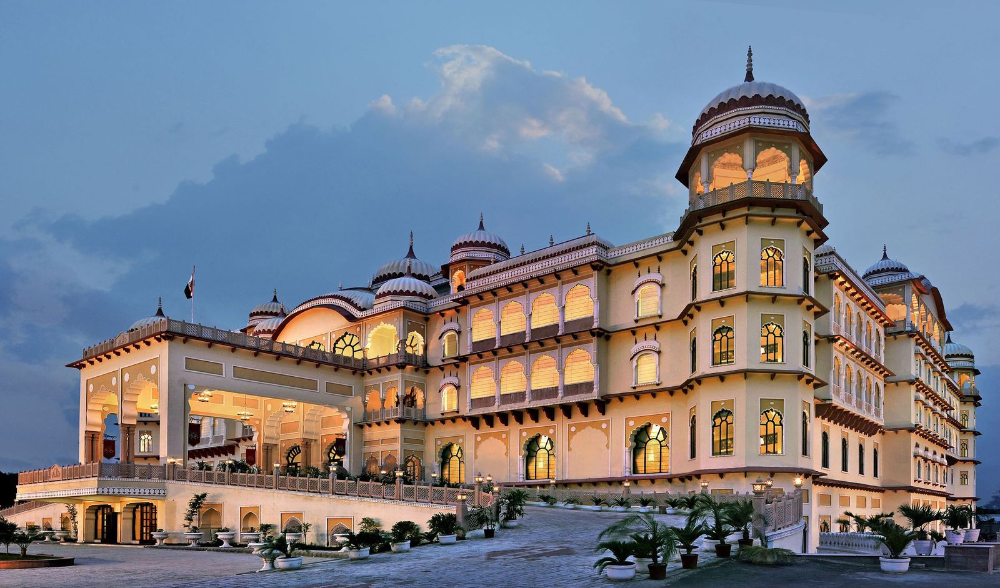
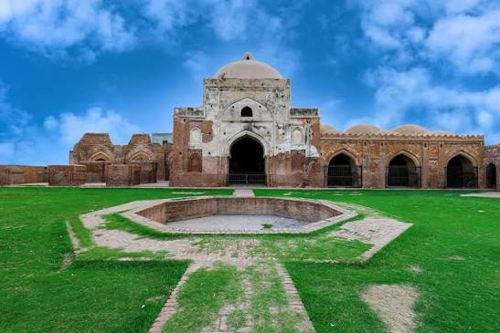
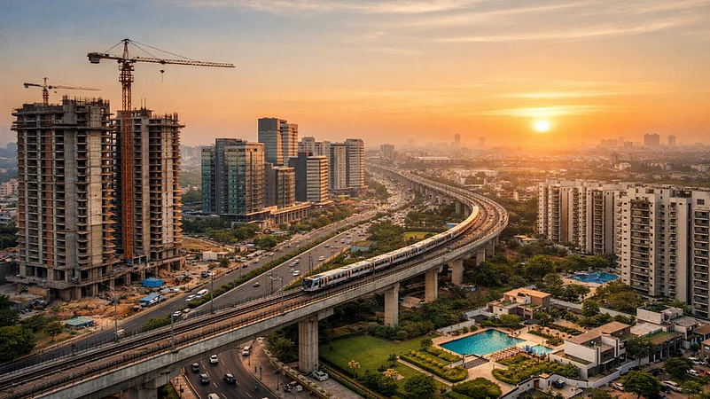
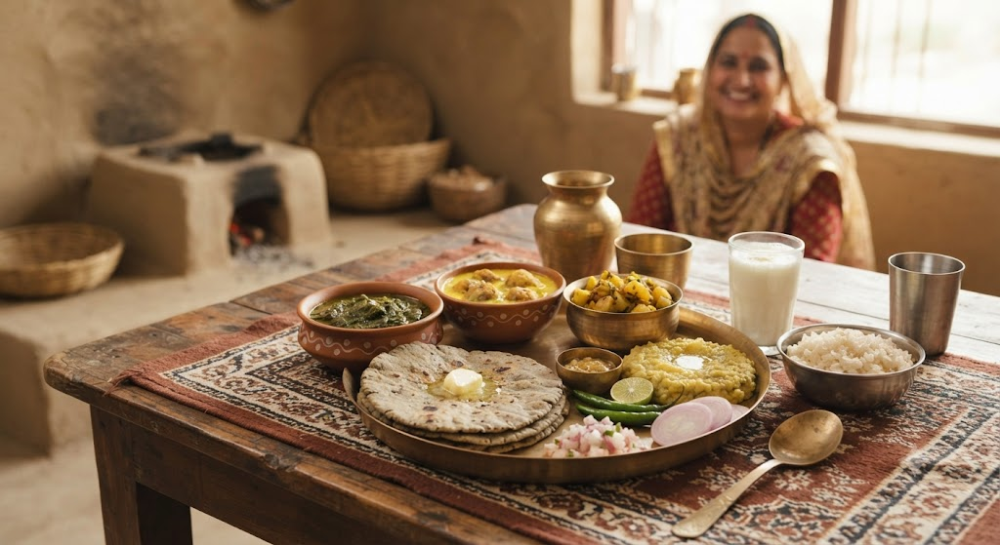

01
Kurukshetra
Land of the Mahabharata — sacred site of the Bhagavad Gita at Jyotisar, featuring grand Brahma Sarovar and ancient temple tanks.

Discover the cradle of Vedic civilization — where the Bhagavad Gita was revealed, ancient battlegrounds shaped nations, dairy-rich rustic traditions thrive, and modern skylines touch the future.
Explore Haryana ↓Haryana is a historically profound northern state nestled in the fertile plains between the Yamuna and Ghaggar rivers, celebrated for its ancient epics, vibrant rural traditions, rich agricultural heartlands, and sporting excellence.
From the sacred waters of Brahma Sarovar in Kurukshetra and the historic looms of Panipat to the soaring glass towers of Gurugram and the heritage craftsman village of Surajkund in Faridabad, Haryana bridges timeless antiquity with modern ambition.
Sacred battlegrounds, global cyber cities, and historical textile centers across Haryana.

Land of the Mahabharata — sacred site of the Bhagavad Gita at Jyotisar, featuring grand Brahma Sarovar and ancient temple tanks.

Millennium City & tech capital — famous for Cyber Hub, futuristic skyscrapers, Sultanpur National Park bird haven, and heritage museums.

City of Weavers — landmark battleground of three epochal historical battles, famous for handloom textiles and Kabuli Bagh Mosque.

Heritage industrial hub — home to the 10th-century sun temple reservoir of Surajkund and the world-renowned International Crafts Mela.
Haryanvi cuisine is rustic, hearty, and simple — deeply anchored in pure dairy, freshly churned white butter (makhan), nutritious millets, and farm-fresh greens.

Ancient folk dances dating back to the Mahabharata era, performed with vibrant Daph and Dholak beats during harvest and wedding celebrations.
A revered traditional soil-pit wrestling (Dangal) culture that has produced world and Olympic champion wrestlers and boxers for India.
The largest international artisan fair celebrating indigenous master craftsmen, weavers, folk troupes, and regional arts from across the globe.
Panipat's iconic coarse durrie carpets, hand-printed furnishings, and intricately shaped rustic terracotta clay pottery.
Discover all 28 states, local food specialties, and centuries of living traditions.
← Back to All States